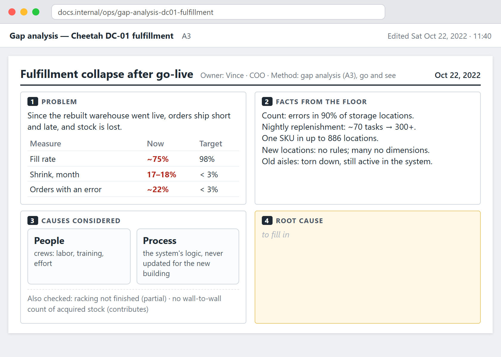
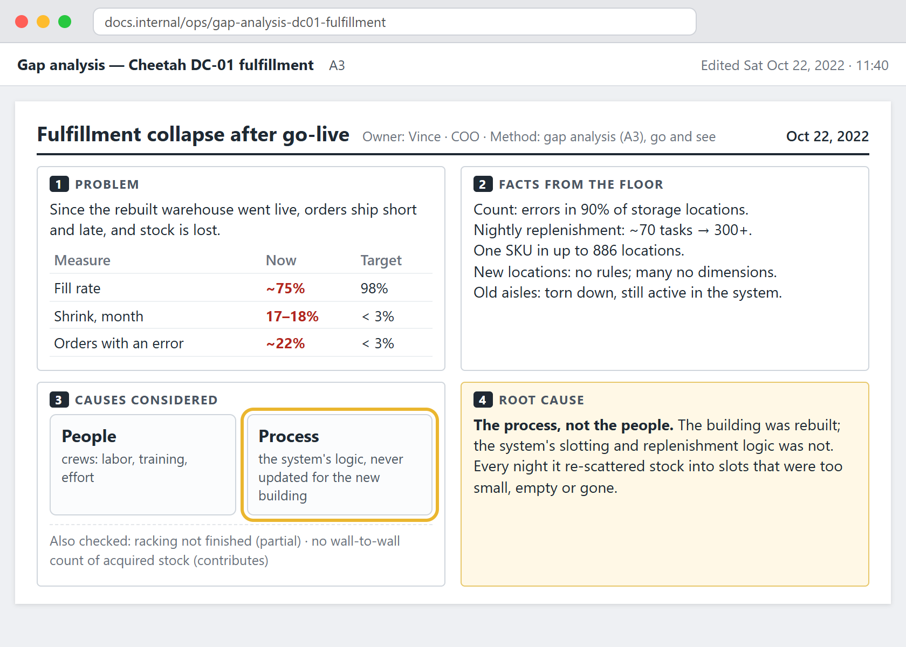
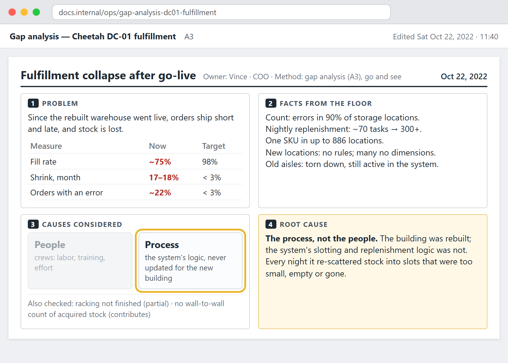
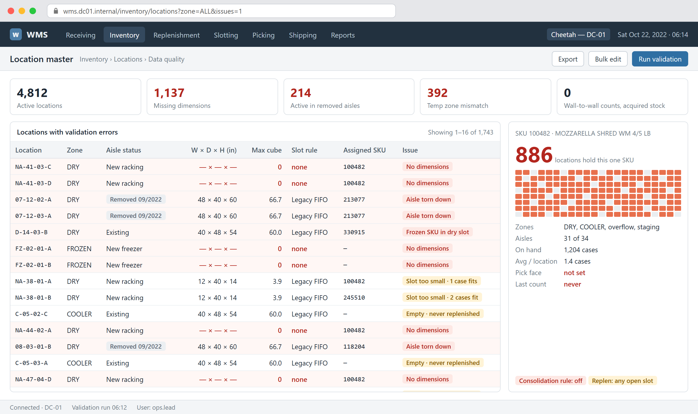
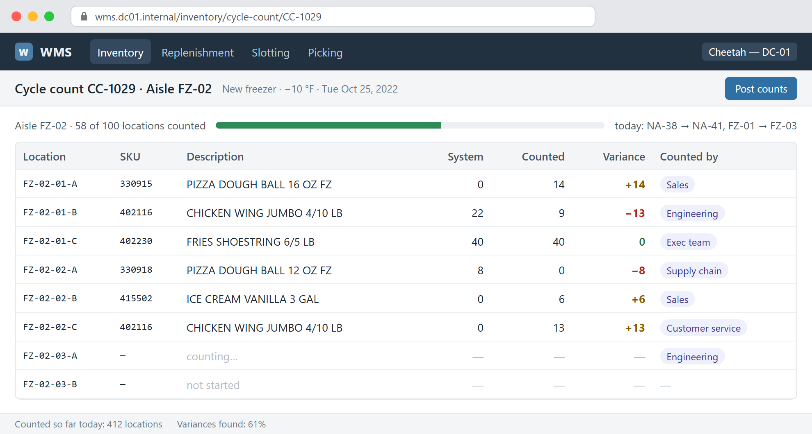
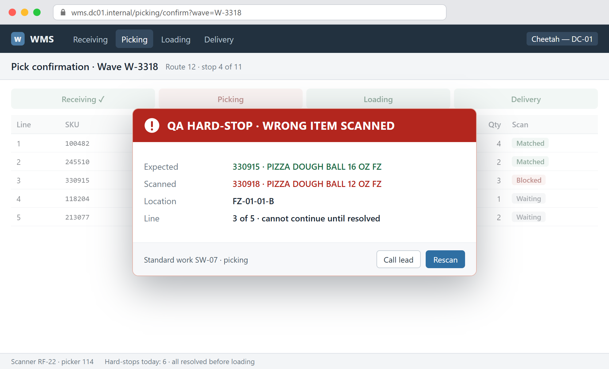
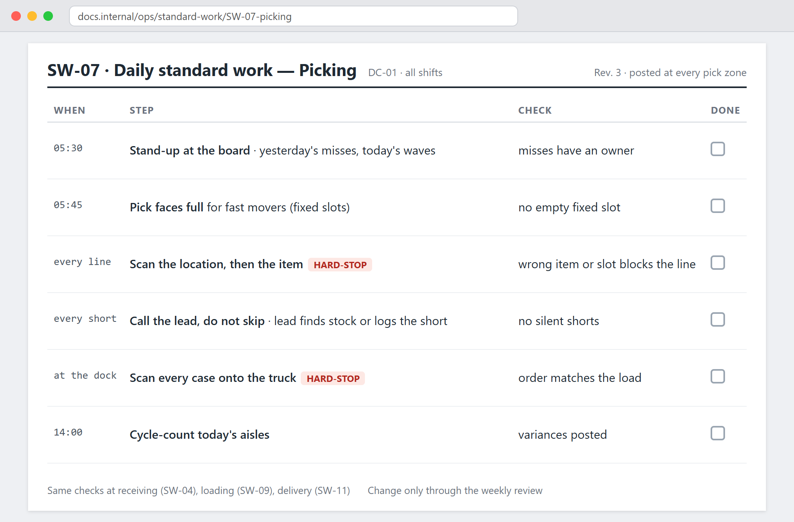
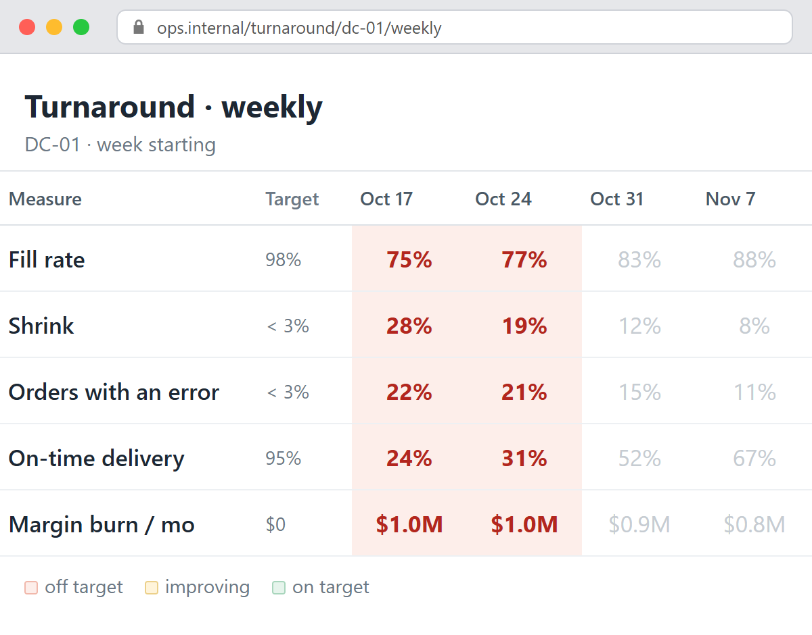

In 2022 · at CheetahVincenow a Waya co-founder
Fall 2022 · Cheetah Technologies
+3regional distributors · ~$24M revenue
GO-LIVE · OCT 2022

~75%fill rate
28%shrink in one week
FROZEN
pizza dough
Frozenin the dry warehouse
Contribution margin burn · per month
$0
~$1M / month
$1,000,000
a month · Mar 2023
Oct 22 · Go and see



OCT 22 · GAP ANALYSIS · what changed, and why

NEW LOCATIONS · no rules, no dimensions

“Every day the warehousing crew
was fixing the problems,
and the IT system was recreating
them every night.”
— Vince
Two tracks, at once
1By hand
2Fix the cause

TRACK 1 · BY HAND · execs, sales, operators on the floor
Na'amaVince's co-founder · 16-hour days
TRACK 1 · BY HAND · Na'ama slept there

TRACK 2 · FIX THE CAUSE · fixed slots for fast movers, flexible for the rest

BARCODE CHECKS · receiving, picking, loading, delivery

DAILY STANDARD WORK · so it survives the next reorg

The turnaround tracker

Fill rate
~75%→99%+
by Mar 2023
Shrink · lost stock
~17–18%→~2%
full pallets no longer thrown out
Orders with an error
~22%→~3%
checked at every scan
Profitable
Oct 2023
The Waya lens
Symptomshort orders, lost stock
Causethe system's logic
≠
Work both at once
Have a problem like this one?
Schedule a Call
See Lean AI
wayaframes.com